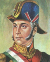
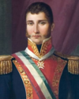

La Independencia de México fue un proceso político y militar que comenzó en 1810 con el objetivo de romper el dominio español sobre el territorio de la Nueva España. Esta lucha transformó profundamente la identidad nacional y marcó el nacimiento de una república soberana que, décadas más tarde, tuvo que defender su recién ganada libertad frente a las ambiciones imperiales de Francia durante el siglo XIX.
| Año / Fecha | Acontecimiento Histórico |
|---|---|
| 1810 (16 sep) | Miguel Hidalgo lidera el Grito de Dolores, dando inicio formal a la Guerra de Independencia. |
| 1811 (30 jul) | Fusilamiento y muerte de Miguel Hidalgo en Chihuahua. El movimiento insurgente continúa bajo otros líderes. |
| 1821 (27 sep) | El Ejército Trigarante entra victorioso a la Ciudad de México y se consuma de manera oficial la Independencia. |
| 1822 (21 jul) | Inicio del periodo imperial de Agustín de Iturbide al ser coronado oficialmente como Emperador de México. |
| 1829 (1 abr) | Inicio de la gestión presidencial de Vicente Guerrero como el segundo presidente constitucional del país. |
| 1862 (5 may) | Comienza la Segunda Intervención Francesa; el ejército mexicano derrota a las tropas de Napoleón III en la Batalla de Puebla. |
| 1867 (19 jun) | Fusilamiento del emperador Maximiliano de Habsburgo, consolidando el triunfo de la República y el fin definitivo de la invasión francesa. |
Miguel Hidalgo

Ignacio Allende
Vicente Guerrero
Josefa Ortiz

Agustín de Iturbide
José María Morelos
Versión instrumental